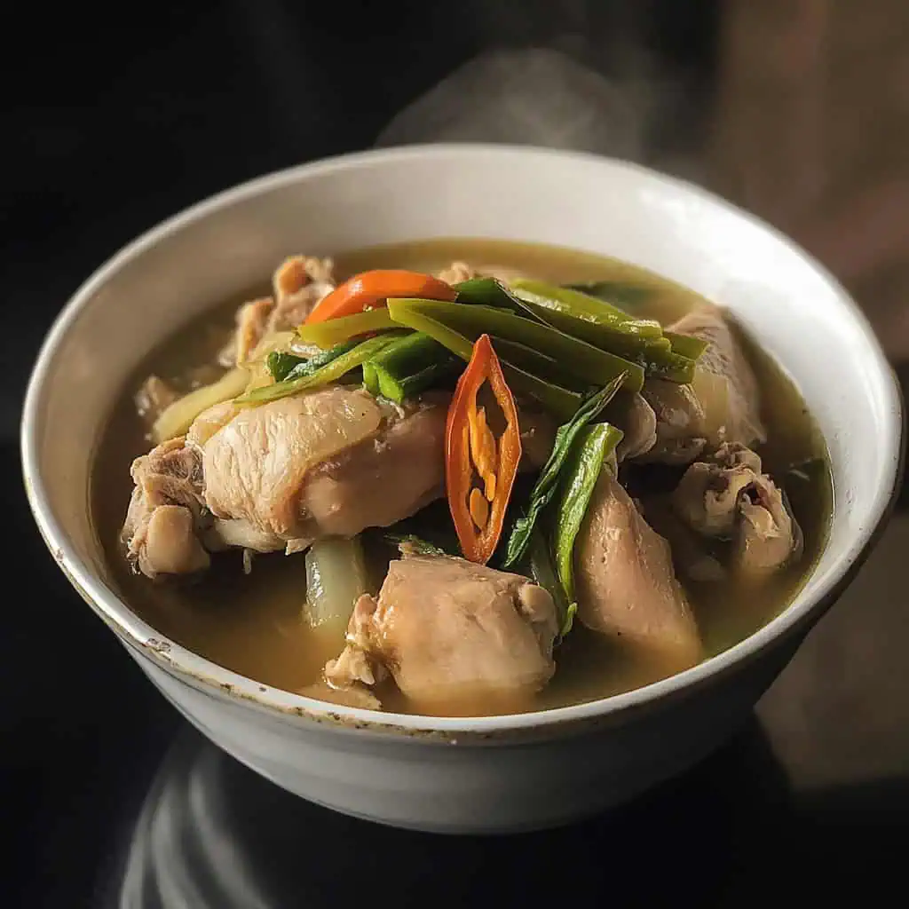

Home
Sinigang na Manok

Sinigang na manok (chicken sinigang) is a sour Filipino soup that uses chicken, tomatoes,
onions, and various vegetables like water spinach, string beans, and radish.
This dish combines tender chicken pieces with an assortment of fresh vegetables like
daikon radish, eggplant, okra and water spinach, all simmered together until the meat is
succulent and the vegetables are just-tender.
The defining sourness comes traditionally from tamarind, though modern versions often use
a convenient powder mix that delivers the signature tang.
Ingredients
- 1½ lbs chicken pieces, preferably with bone
- 2 tablespoons cooking oil
- 8 cups water
- 1 packet (40g) tamarind soup base (sinigang mix)
- 2-3 tablespoons fish sauce
- 1 chicken bouillon cube (optional)
- 1 large tomato, quartered
- 1 medium red onion, quartered
- 4-inch daikon radish, sliced diagonally
- 1 small eggplant, sliced diagonally
- 4 pieces okra, ends trimmed
- 2 cups water spinach, stems and leaves separated
- 5 leaves bok choy
- 2 pieces long green chilies (optional)